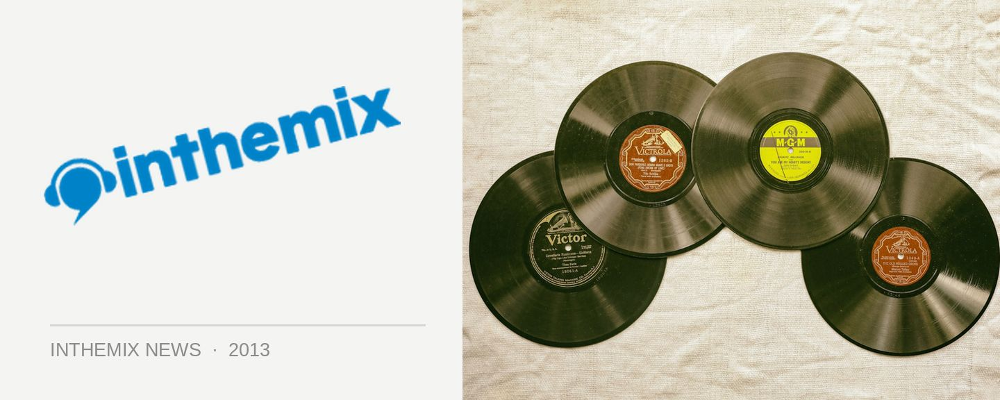

Bangalter on EDM: "I wouldn't listen to Deadmau5 for pleasure"
We’re just a mere few days from the release of the stupendously hyped Random Access Memories, on which Daft Punk “went back to go forward”. The pair have now spoken out on some of the dance music that’s dominating the festival stages in the present, in another of the small handful of interviews they’ve given in promotion of the album.
“I don’t know EDM artists or the albums. At first I thought it was all just one guy, some DJ called EDM,” Guy-Manuel de Homem-Christo wryly quipped to NME this week, comparing it to the sugary high of an energy drink. “EDM is energy only. It lacks depth. You can have energy in music and dance to it but still have soul.”
The pair told the UK mag they didn’t listen to a lot of electronic music. “Deadmau5? No. I wouldn’t listen to Deadmau5 for pleasure,” added Thomas Bangalter. He has however got time for EDM’s other reigning superstar. “Skrillex we have a lot of respect for. He’s said that he saw our live show with the pyramid in 2007 and it made him want to make music, but it feels like he’s not copying our formula. He might be the kid that breaks the cycle, but we don’t listen to a lot of electronic music. We never did.”
The duo’s cheeky comments come at the end of the week that’s been mercilessly crammed with all things Daft Punk. Random Access Memories was finally unveiled to the public when a stream was made available on iTunes, allowing everyone the chance to finally make up their own mind on the most talked about album of the year. This weekend sees the album land in full.